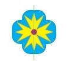
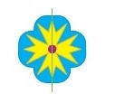

Figuras simétricas
Observe que, nas figuras abaixo, foi traçada uma linha verde que divide cada uma delas em duas partes iguais.

Agora, marque as figuras que não são simétricas em relação à linha verde e confira o resultado.


 
